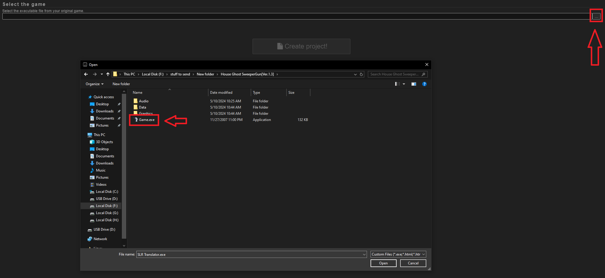
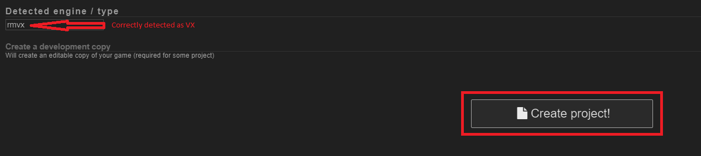
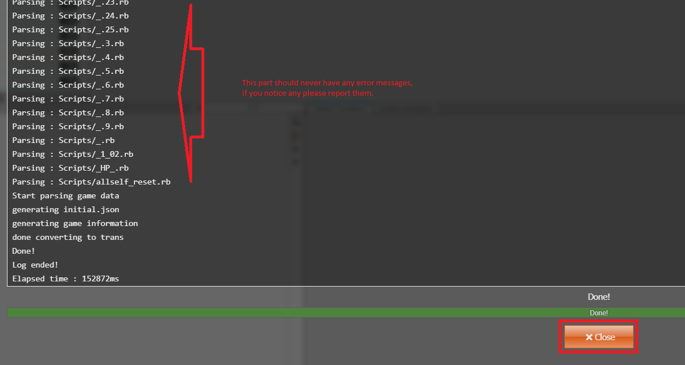

VX is an RGSS2 game and follows the exact same pipeline as VX Ace: the data is Ruby-marshaled in the Data folder (with the .rvdata extension), the scripts live in Data/Scripts.rvdata, and Game.ini names the RGSS2 runtime. Read RPG Maker VX Ace first — this page only lists what is specific to VX.
RPG Maker XP, VX, Ace, MV & MZ Parser and select the game's executable. rmvx is detected from the RGSS2 entry in Game.ini (see Engine Detection).Game.rgss2a archive, the wizard forces a development copy and decrypts the archive into it — see Encrypted & Packed Games.Create project!.
Select the RPG Maker parser entry in the wizard.

Pick the VX game executable; rmvx is detected automatically.

After creation: review any reported errors, then close the summary.
A VX game folder — here with the data packed into Game.rgss2a.
.rvdata extension (Actors.rvdata, Map###.rvdata, and so on). Names, descriptions, messages, notes and event command lists are extracted; Animations and Tilesets are skipped.Scripts/!Main Injection object is available exactly as on VX Ace — including automatic font shipping for Font.default_name file assignments.
Reviewing the script sections of an RGSS project in the editor.
Identical to VX Ace: Export Project → Export to a folder or Export as a Zip file, with the tagged-rows filter and Word Wrap By Tag rules (export-time rules, distinct from the Automatic Word Wrapping button) in the Export Options dialog; on export the translated YAML is repacked into .rvdata files and the scripts are recompiled — see RPG Maker VX Ace: Applying and exporting.

Word wrap rules: pick the tags to wrap and the maximum line length.
Data/main.rvdata script container. It is extracted with the bundled TES patcher during parsing and rebuilt on export — see Encrypted & Packed Games.